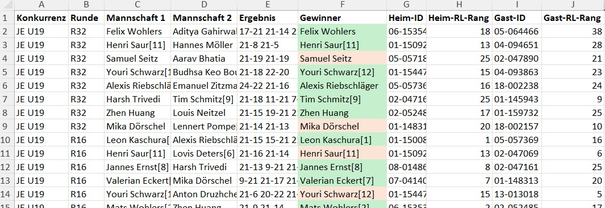
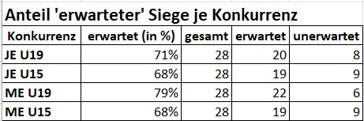
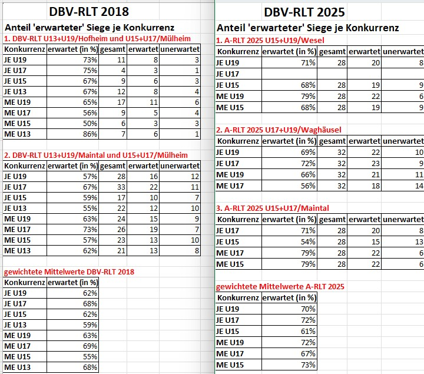
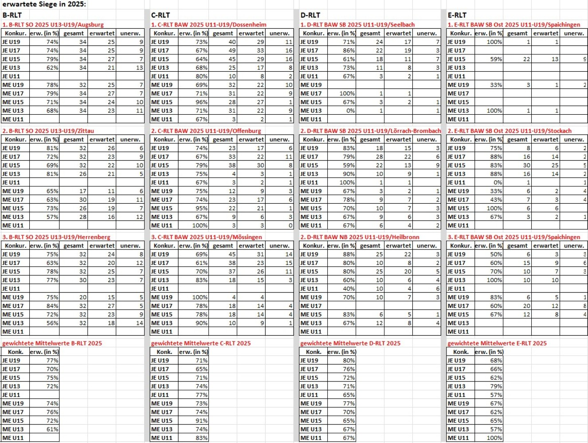

Edi Klein, 11.08.2025
Seit 2020 sorgt das Jugendwettkampfsystem (JWS) des Deutschen Badmintonverbandes für eine einheitliche, bundesweite Ranglistenwertung. Eine vom Autor dieses Textes durchgeführte Studie prüft, wie gut die Ranglisten die tatsächliche Spielstärke abbilden. Die Auswertung zahlreicher Turnierdaten zeigt: Das JWS ist mindestens so treffsicher wie das frühere System – oft sogar besser.Die wichtigste Neuerung im JWS ist eine gemeinsame bundesdeutsche Rangliste. Die Punktevergabe erfolgt nach einheitlichen Tabellen – abgestuft nach Altersklasse (U9–U19) und Turnierniveau (A–E).
Statt einzelner Ranglisten pro Ebene (Region, Bezirk, Landesverband, Gruppe, national) fließen die besten fünf Turnierergebnisse der letzten zwölf Monate in die Disziplinrangliste ein. Damit lassen sich unterschiedliche Spielstärken und Turnierniveaus in einer einzigen Rangliste abbilden – vorausgesetzt, die Punktetabellen sind gut aufeinander abgestimmt.
Beispiel: Die Rangliste im Mädcheneinzel einer Woche zeigt alle Spielerinnen von U9 bis U19, die im letzten Jahr Punkte gesammelt haben – sortiert nach der Punktzahl. Eine sehr gute U13 Spielerin mit vielen Punkten kann dann etwa vor einer U15 Spielerin einsortiert sein.
Damit die Alters- und damit auch Spielstärkeunterschiede, sowie auch die unterschiedlichen Turnierniveaus in einer einzigen Rangliste abbildbar sind, wird in den Punktetabellen entsprechend differenziert.
Beispielsweise gibt es im U17-RLT für Platz 7 die gleiche Punktzahl wie im U15-RLT für Platz 1 (Punkteverhältnis 1:7). Ein B-RLT ergibt auf jeder Turnierplatzierung 120% der gleichen Turnierplatzierung eines C-RLT (Niveauverhältnis 120%). Die aktuell gültigen Punktetabellen sind in den Ranglistenbestimmungen der DBV-Jugendspielordnung dokumentiert, die aktuellen Verhältnismäßigkeiten sind auf badminton.de veröffentlicht.
Die Punktetabellen sind im Idealfall so ausgelegt, dass sich leistungsstarke Spieler einer AK leistungsgerecht in den Punkteregionen von Spielern der nächsthöheren Altersklasse einsortieren. Mit Einführung des JWS war beabsichtigt, die Realitätsnähe der Ranglisten kritisch zu begleiten und im Bedarfsfall die Punktetabellen entsprechend anzupassen. Der Beobachtungszeitraum muss ausreichend gross gewählt werden (beispielsweise 1 Jahr), damit die Auswirkungen allfälliger Anpassungen im Hinblick auf den 12-Monats-Zeitraum beobachtbar sind.
Im Zeitraum 2020-2024 wurden mehrere Anpassungen vorgenommen und deren Wirkung beobachtet: Bereits zum 1.1.2021 wurde das Punkteverhältnis U11:U13 von 1:10 auf 1:12 gesetzt, sowie U13:15 von 1:9 auf 1:12 gesetzt, da sich gezeigt hat, dass Spieler der jeweils jüngeren Altersklasse zu hoch in der jeweils höheren Altersklasse einsortiert waren.
Zum 1.1.2024 wurde die Bepunktung internationaler Turniere der Altersklasse U15 ab Platz 9 abgewertet, da sich bei einigen dieser Turniere das Achtelfinale relativ einfach erreichen ließ. Zudem wurde die Liste relevanter U15-Turniere um sehr weit entfernte Turniere gestrichen, um längere (Flug-)Reisen bei schwächer besetzten Turnieren zu vermeiden (Stichwort "Turniertourismus").
Den DBV Ausschuss für Jugend erreichen regelmäßig Hinweise auf weitere Optimierungsmöglichkeiten, die in manchen Fällen gerechtfertigt sind, in anderen Fällen eher Einzelmeinungen oder besondere Fälle darstellen. Zur Beurteilung, ob auffällige Phänomene auch in der Breite vorkommen, sind für belastbare Aussagen datenbasierte Analysen über längere Beobachtungszeiträume hilfreich, z.B. unter Betrachtung der durchgeführten Turniere, der jeweils verwendeten Ranglistenposition der Teilnehmer sowie deren Matchergebnisse und Turnierplatzierungen.
Es stellt sich in diesem Zusammenhang die Frage, welche Daten und Methoden für einen definierten Beobachtungszeitraum geeignet sind, um Aussagen über die Eignung der Punktetabellen machen zu können, d.h. wie gut die Ranglisten die Realität abbilden. Nach Recherche in Fachzeitschriften wie z.B. in Journal of Quantitative Analysis in Sports oder generell zum Thema Mathematics and Sports haben sich folgende Methoden als geeignet für diese Studie herauskristallisiert.
Methode 1: Vorher-Nachher-Vergleich ("Seeding vs. Ranking"):Die Ergebnislisten eines Turniers werden mit dessen Setzlisten verglichen. Eine höhere Korrelation der beiden Listen weist auf eine bessere Abbildung der Spielstärke durch die Rangliste hin. Falls die Setzlisten also strikt nach der aktuellen Rangliste erstellt sind, ist diese als realitätsnäher zu bezeichnen, je genauer eine Ergebnisliste einer Setzliste ähnelt.
Beispiel: die Spieler mit den Setzplätzen 1, 2, 3, 4 erreichen zum Turnierende die Platzierungen 1, 2, 4, 9 (50% Trefferquote). Hätten sie die Platzierungen 1,2,3,7 erreicht, wäre die Trefferquote 75%, da 3 von 4 Platzierungen den Setzplätzen entsprechen.
Auch wenn man für dieses Verfahren die Metrik in % weiter verfeinern könnte (z.B. durch Verwendung gewichteter Abweichungen: "wie weit ist die Platzierung vom Setzplatz entfernt?"), sind 2 Nachteile zu erkennen: eine Analyse betrifft meistens nur einen Teil der Turnierteilnehmer, da bei vielen Turnieren lediglich die Hälfte oder weniger Spieler gesetzt sind. Zudem ist nicht beobachtbar, gegen welche Gegner ein Spieler gewonnen oder verloren hat.
Methode 2: Vorhersage des Spielausgangs (Match Prediction Accuracy):Bei dieser Methode wird evaluiert, wie gut die Rangliste (als Setzliste) den tatsächlichen Turnierverlauf voraussagt. Dazu wird der Anteil der Spiele berechnet, in denen derjenige Spieler gewinnt, der in der Rangliste die bessere Position hat, wie z.B. "Der Anteil erwarteter Siege am Turnier XY ist 68%". Erwartete Siege werden in der Literatur auch mit "korrekt vorhergesagten Siegen" bezeichnet, passend zum englischen Begriff (vgl. Überschrift). Eine übliche Messlatte auch in anderen Sportarten ist 75% 1,2. Angepasst ans JWS ist das so zu interpretieren, dass die Anzahl erwarteter Siege in etwa dieser Messlatte entsprechen sollte.
Im Hinblick auf den Vorher-/Nachher-Vergleich ist diese Methode feinkörniger, da jedes Matchergebnis zur Bewertung beiträgt, und sie ist sehr robust gegen Ausreißer (z.B. Überraschungssiege, Ausscheiden wg. Verletzung). Außerdem funktioniert sie auch bei unvollständigen Turnierergebnissen, falls z.B. die letzte Runde (Platzierungsspiele) nicht ausgespielt wird.
Aufgrund der genannten Vorteile, aber insbesondere auch weil alle Turnierteilnehmer, und nicht nur diejenigen in den Setzplätzen in die Analyse aufgenommen werden, wurde für die Studie Match Prediction Accuracy als Methode ausgewählt. Es sind zwar Verfeinerungen der Methode denkbar, die noch aussagekräftigere Analysewerte liefern, die aber im Rahmen dieser Studie nicht mit vertretbarem Aufwand durchführbar waren. Beispiel-Verfeinerung: Sieg gegen sehr starken Gegner würde stärker gewichtet als Sieg gegen nur leicht besseren Gegner.
Ziel ist es, mit dieser Methode die Güte der Punktetabellen bewerten zu können (Betrachtung der 75%-Messlatte), aber auch um Zeiträume vergleichen zu können, in denen Turniere mit den jeweils gültigen Ranglistensystemen bzw. Punktetabellen durchgeführt wurden.
Für die Datenanalyse sind für die Betrachtungszeiträume a) alle Ranglisten der jeweiligen Kalenderwochen sowie b) Turnierdaten (Turnierbezeichnung, Datum, Daten aller Teilnehmer, alle Matchergebnisse und Namen jeder Begegnung etc.) notwendig. Diese Daten liegen nur zum Teil in verwendbarer Form vor und sind verteilt veröffentlicht.
a) Ranglisten U19: sind unter dbv.turnier.de und badminton.de online verfügbar inkl. aller Archivversionen seit 2019, allerdings im HTML-Format, was nur mit aufwändiger Webscraping Technik automatisiert zugreifbar ist. Bei badminton.de stehen die Ranglistentabellen für alle Kalenderwochen zusätzlich als Excel-Download zur Verfügung, was nach Abwägung des Zugriffsaufwandes als Datenbasis gewählt wurde. Technisch lädt ein eigens erstelltes Python Skript alle seit dem letzten Lauf neuen Ranglistentabellen herunter und liest sie in eine SQLite3 Datenbank ein.
b) Turnierdaten: stehen zwar unter dbv.turnier.de zur Verfügung, allerdings ebenfalls im HTML-Format und zusätzlich sind aus Datenschutzgründen Datenelemente wie z.B. die SpielerID bei den Matches (Reiter "Spiele") weggelassen bzw. erst ein paar Klicks weiter recherchierbar, so dass diese Möglichkeit aus Aufwandsgründen ebenfalls nicht weiterverfolgt wurde. Als Lösungsweg lädt ein eigens erstelltes Python Skript die Turnierdateien von turnier.de herunter, liest sie per BTP Software (Badminton Turnier Planer) ein und exportiert alle Spiele des Turniers mitsamt Ergebnissen als Excel-Datei.
Mit der Verknüpfung aller Matches eines Turniers aus der oben genannten Excel-Datei und der zum Turnierdatum gültigen Rangliste können die erwarteten Ergebnisse je Konkurrenz visuell dargestellt und tabellarisch zusammengefasst werden. Tabelle 1 zeigt ein Ausschnitt aus der mit zusätzlichen Daten angereicherte "Spiele"-Datei des 1. DBV A-RLT U15/U19 2025:
Jede Zeile in Tabelle 1 enthält Angaben zu einem Match. Ist der Gewinner grün gefärbt, hat der Spieler mit der besseren Ranglistenposition (Spalten H und J) gewonnen (erwarteter Sieg), andernfalls ist die Zelle rot gefärbt. Am Dateiende wird eine Zusammenfassung der Matchausgänge je Konkurrenz berechnet (im Beispiel nur Einzel, kein Doppel/Mixed), welche in Tabelle 2 gut darstellt, wie weit die Anteile erwarteter Siege in jeder Konkurrenz ungefähr von der oben genannten 75%-Messlatte abweichen.
Die Rangliste bildet in diesem Beispiel also offensichtlich die realen Spielstärken ausreichend ab, so dass Kritiken am JWS in diesem Beispiel nicht in der Breite haltbar sind, sondern sich wie oben vermutet an Einzelfällen und Ausreißern orientieren. Es spricht andererseits grundsätzlich nichts dagegen, das Ranglistensystem kritisch zu beobachten und ggf. mittels Stellschrauben anzupassen, und so ggf. die Anteile erwarteter Siege zu verändern.
Eine Veränderung in Richtung 100% ist jedoch nicht anzustreben, denn wenn 100 % der Spiele vom besser gerankten Spieler gewonnen werden, dann wäre das System "perfekt prognostizierend", aber auch langweilig und womöglich überreguliert. Es gäbe keine Überraschungen mehr, keine dynamische Entwicklung, keine Nachwuchstalente, die "durchbrechen" können.
Ein realistischer Zielwert für die Treffsicherheit von Ranglisten liegt deutlich unter 100 %. In der Literatur werden meist ca. 65–75 % genannt. Ob eine Quote als „gut“ oder „fair“ gilt, hängt stark von Sportart, Altersklasse, Leistungsdichte und der Qualität der Rangliste ab.
Zum Vergleich der Güte von Ranglistensystemen wurden in der Studie die erwarteten Siege aller A-RLT U15-U19 nach dem aktuellen Ranglistensystem (Januar – Juni 2025) mit allen A-RLT U13-U19 im Herbst 2018, also vor der Einführung des JWS, verglichen. Die Aufbereitung der Daten aus der DBV-Rangliste 2018 war allerdings aufwändig, da deren Struktur deutlich von der heutigen abweicht.
Der Vergleich in Tabelle 3 zeigt für diese Serie nicht nur eine Ebenbürdigkeit, sondern sogar leicht bessere Mittelwerte im JWS im Vergleich zum alten Ranglistensystem. Das bedeutet, dass grundsätzlich die Ranglisten im JWS die realen Leistungsstärken mindestens gleich gut oder besser abbilden als im alten Ranglistensystem.
Die Aufbereitung von Turnierdaten im alten Ranglistensystem (vor 2020) war im Rahmen dieser Studie zu aufwändig, aufgrund der einheitlichen Struktur im JWS aber für 2020 und später gut möglich. Deshalb kann an dieser Stelle kein Vergleich vorgenommen werden, vielmehr wird die Anwendung der gewählten Methode auf Turnierserien aus 2025 in Tabelle 4 dargestellt.
Bei B-RLT sind die gewichteten Mittelwerte im sehr guten Bereich, außer im ME U13 (61 %). Bei näherer Betrachtung der unerwarteten Siege im ME U13 in den Turnierdateien ist zu erkennen, dass in vielen Fällen durch an A-RLT U11/U13 erkämpften hohe Punktezahlen und damit bessere Ranglistenposition die Unterlegenen zu gut eingestuft waren (überbewertete Spieler).
Gut zu erkennen ist auch, dass auf tieferen Turnierebenen größere Ausreißer bei einzelnen Konkurrenzen auftreten (0 %, 33 %, 100 % bei E-RLT), die zumeist bei sehr kleinen Teilnehmerfeldern vorkommen.
Anhand der betrachteten Turnierserien ist erkenntlich, dass die Ranglisten und Punktetabellen im JWS eine vergleichbare und teilweise sogar höhere Güte aufweisen als im alten Ranglistensystem vor 2020.
Die Studie zeigt klar: Das JWS bildet die Spielstärken mindestens so gut ab wie das alte System – in einigen Bereichen sogar besser. Das belegt, dass die seit 2020 eingeführten Anpassungen grundsätzlich funktionieren.
Die Anwendung der Methode Match Prediction Accuracy hat sich im Rahmen der vorliegenden Studie bewährt, um die Güte von Punktetabellen und Ranglisten zu bewerten. Die visuelle Darstellung der (un-)erwarteten Siege und die tabellarische Darstellung der gewichteten Mittelwerte der jeweiligen Konkurrenzen zeigt Bereiche hoher Güte und ggf. auch Schwachstellen des Systems auf.
Der verwendete Ansatz ließe sich um weitere Analysen erweitern wie z.B. die Identifikation von überbewerteten Spielern, also Spielern, die in mehreren Turnieren deutlich unter ihrem Ranglistenplatz abschneiden. Oder auch das Tracking von Spielern über 6–12 Monate hinweg mit der Frage, wie stark ihre Ranglistenposition bei stabiler Turnierleistung variiert.
Bei weitergehender Automatisierung könnte ein Monitoring aufgebaut werden, das fortlaufend Analysen und Vergleiche dokumentiert, wie sie in dieser Studie gezeigt wurden, und so im Bedarfsfall ohne großen Aufwand auf Anomalien oder Unstimmigkeiten hinweist.
Rückfragen und Anregungen an edi.klein@badminton.de (Vorsitz im DBV-Ausschuss für Jugend)
(1) footballseeding.com (2019): How does Seeding Matter; footballseeding.com/news/how-does-seeding-matter/
(2) Laszlo Csado (2020): A Paradox of Tournament Seeding researchgate.net/publication/346143589_A_paradox_of_tournament_seeding